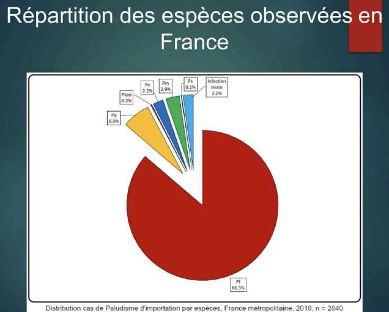
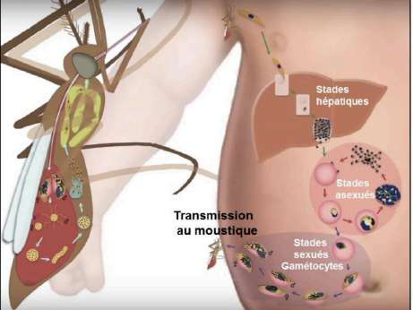
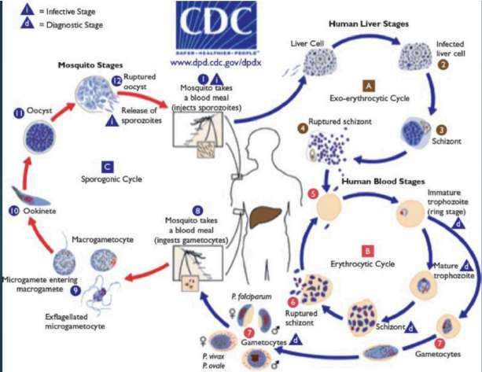
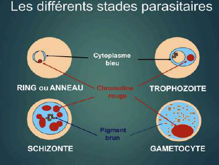
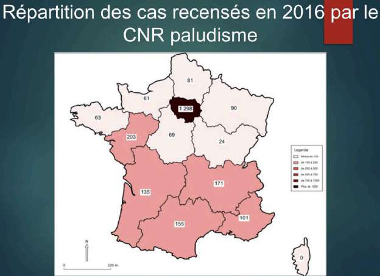
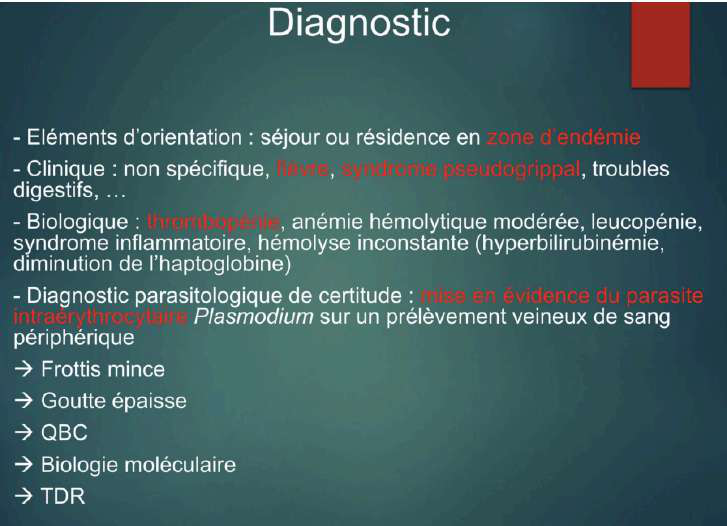

UE3 Parasitologie — Cours 1 part 2, Dr Marteau · Pivots : Plasmodium (5 espèces) · vecteur = Anopheles femelle · toute fièvre au retour de zone d'endémie = palu jusqu'à preuve du contraire · urgence diagnostique et thérapeutique. Figures du cours intégrées.
I. Épidémiologie & généralités
1. Épidémiologie
Le paludisme est une parasitose tropicale vectorielle provoquée par un protozoaire (parasite unicellulaire) du genre Plasmodium. Le vecteur est un arthropode (moustique) qui pique un hôte pour prélever le parasite ; après une évolution obligatoire dans le moustique, le parasite est transmis à une autre personne lors d'une nouvelle piqûre.
1re endémie parasitaire mondiale
3 milliards de personnes exposées (80 pays)
247 millions d'accès palustres en 2024 (94 % en Afrique sub-saharienne)
610 000 décès en 2024, dont 95 % en Afrique (−60 % depuis 2000)
75 % des décès = enfants de < 5 ans (2021)
2000–2015 : baisse de l'incidence mondiale (−70 %) et des décès (−62 %), mais stagnation depuis 2016
La stagnation est liée au contexte géo-politique : le paludisme remonte là où la lutte se relâche (Iran, Venezuela…).
2. Généralités — agent & vecteur
L'agent
Plasmodium = protozoaire, plus précisément un hématozoaire (il se loge dans les globules rouges → parasite les érythrocytes).
> 140 espèces de Plasmodium identifiées ; 5 espèces pathogènes pour l'homme.
Alphonse Laveran, 1880 (Prix Nobel 1907).
Le vecteur
Uniquement les moustiques Anopheles.
C'est la femelle hématophage qui pique (le mâle butine les fleurs, il ne pique pas).
Piqûres essentiellement nocturnes (activité max de 23 h à 6 h).
Les espèces vectrices qui transmettent le plus se trouvent en Afrique. Photos / identification microscopique des espèces non à connaître (précision du prof).
3. Les 5 espèces pathogènes
Espèce
Caractéristique
P. falciparum
Espèce potentiellement létale (tue le plus) et la plus répandue.
P. vivax
2e espèce en importance dans le monde.
P. ovale
Deux sous-espèces (P. o. curtisi, P. o. wallikeri) ; différenciées par biologie moléculaire / PCR-séquençage.
P. malariae
Fièvre quarte.
P. knowlesi
Parasite du singe (Asie du Sud-Est), accidentellement chez l'homme.

Répartition des espèces (paludisme d'importation, France métropolitaine, 2018, n = 2840).P. falciparum écrasant (86,3 %), loin devant P. ovale (6 %), P. vivax, P. malariae, infections mixtes.II. Cycle parasitaire
4. Cycle (humain ↔ moustique)
Deux compartiments : une partie humaine et une partie moustique.
Hôte définitif = le moustique (lieu de la reproduction sexuée).
Le moustique injecte une forme longue : le sporozoïte → passe dans le sang puis dans le foie (stade hépatique, asymptomatique).
Dans l'hépatocyte, multiplication → hépatocyte rempli de parasites = schizonte hépatocytaire (corps bleu).
Éclatement du schizonte → libération de mérozoïtes dans le sang → apparition des symptômes (aucun symptôme tant qu'on est dans le foie).
Un mérozoïte entre dans un GR → trophozoïte, qui évolue en 2 voies :
Voie asexuée (≥ 95 % des cas) : trophozoïte grandit, son noyau se divise → schizonte érythrocytaire (1 parasite à noyaux multiples) → éclatement du GR → libère des mérozoïtes → cycle qui se répète. C'est l'éclatement synchrone des schizontes / GR qui provoque les pics de fièvre.
Voie sexuée (≈ 5 %) : trophozoïte → gamétocytes mâles/femelles, inactifs, circulant dans le sang.
Chez le moustique
En piquant, le moustique aspire tout (gamétocytes, trophozoïtes, mérozoïtes, schizontes) mais seuls les gamétocytes survivent / infectent le moustique.
Intestin moyen : gamétocytes → gamètes → fécondation → œuf (ookinète) → migre vers la paroi digestive → oocyste → libère des sporozoïtes qui migrent vers la glande salivaire → réinjectés à la piqûre suivante.
1 seul clone = cycle synchronisé → fièvre régulière. Plusieurs clones (cas le plus fréquent) = cycles décalés → fièvre irrégulière/anarchique. Le moustique infecté est affaibli (vole moins bien). La femme enceinte peut transmettre (paludisme placentaire → d'où la prophylaxie pendant la grossesse).

Cycle simplifié (figure préférée du prof) : compartiment moustique (gauche) ↔ compartiment humain (droite) avec stades hépatiques, stade sexué et gamétocytes.

Cycle détaillé (CDC) : à gauche le sporogonic cycle (moustique : oocyste, ookinète, sporozoïtes) ; à droite les stades chez l'homme (liver stages hépatiques puis erythrocytic cycle : trophozoïte → schizonte → gamétocytes).
5. Stades parasitaires
Le trophozoïte devient soit schizonte (1 parasite à noyaux multiples), soit gamétocyte (stade sexué).

Les 4 morphologies clés : RING / anneau et trophozoïte (cytoplasme bleu, chromatine rouge), schizonte (multiples noyaux) et gamétocyte (pigment brun). Codes couleur : cytoplasme bleu, chromatine rouge, pigment brun.
6. Hypnozoïtes & rechutes
Les hypnozoïtes = trophozoïtes quiescents persistant dans le foie, sans multiplication immédiate.
Ils peuvent se réactiver des mois à des années après l'infestation → responsables de rechutes (reviviscences) tardives.
Uniquement P. vivax et P. ovale. Pas d'hypnozoïtes chez P. falciparum, P. malariae, P. knowlesi.
III. Clinique
7. Clinique — accès simple / grave
RÈGLE D'OR. Toute fièvre (ou histoire de fièvre) isolée ou associée à des symptômes généraux, dans les mois suivant le retour d'une zone endémique, est un paludisme jusqu'à preuve du contraire. P. falciparum peut évoluer rapidement vers un accès grave (troubles neurologiques, coma). Paludisme = urgence diagnostique ET thérapeutique.
Incubation : asymptomatique (parasite dans le foie). Trois entités : accès palustre simple · accès simple à fièvre périodique · accès palustre grave.
Critères de l'accès palustre grave (SPILF) — selon présence, critères cliniques/biologiques et fréquence : défaillance neurologique, respiratoire, cardio-circulatoire, convulsions, acidose, hyperlactatémie, hypoglycémie, anémie profonde, hyperparasitémie, insuffisance rénale, ictère, hémoglobinurie. (Détail revu l'an prochain.)
8. Particularités par espèce
Espèce
Rythme fébrile / particularités
P. falciparum
Incubation jusqu'à 2–3 mois. Fièvre tierce (accès 1 jour sur 2, toutes les 48 h) si infection synchrone par un clone unique ; pics irréguliers si plusieurs clones. Présent au niveau de la ceinture tropicale.
P. vivax
Accès de reviviscence (rechute) sans nouvelle piqûre ni voyage. Fièvre tierce (cycle sanguin de 48 h : J1 accès fébrile → J2 apyrexie → J3 nouvel accès). Touche les hématies jeunes (grandes).
P. ovale
Répartition surtout Afrique centrale. Touche aussi les hématies jeunes.
P. malariae
Fièvre quarte (J1–J4). Ceinture tropicale. Cas rapporté : reviviscence 18 ans après un voyage.
P. knowlesi
Répartition restreinte (Asie du Sud-Est), parasite du singe. Fièvre quotidienne.
Reconnaissance microscopique des espèces non exigible cette année (précision du prof). Au frottis : anneau de trophozoïte dans le GR ; gamétocyte de forme allongée.
IV. Diagnostic & prise en charge
9. Répartition des cas (France)
En France métropolitaine, il s'agit de paludisme d'importation :
≈ 4500–5000 cas/an (dont 2500–3000 déclarés)
> 80 % au retour d'un séjour dans le pays d'origine
95 % en provenance d'Afrique subsaharienne ; 85 % à P. falciparum (SPILF 2017)
jusqu'à 25 décès/an par retard au diagnostic
Paludisme autochtone rare : paludisme des aéroports, transfusion, greffe d'organes…
DROM-COM : Mayotte en phase d'élimination depuis 2014 ; Guyane < 500 cas/an.
Paludisme des aéroports : un employé de Roissy, jamais sorti de France, contracte le palu après une piqûre d'un moustique infecté présent dans la soute d'un avion. Saisonnalité : pic l'été / début d'automne (retour de vacances).

Cas recensés en 2016 (CNR paludisme). Plus c'est foncé, plus il y a de cas : l'Île-de-France est la plus touchée (1298). Côte d'Ivoire + Cameroun ≈ moitié des cas. (Corse à 0 = probable sous-déclaration.)
10. Diagnostic biologique
Sang veineux sur anticoagulant (EDTA, ACD) ; rendu du diagnostic dans les 2 heures.
10 μL de sang étalés, Giemsa dilué (lyse les GR, colore l'Hb en violet/bleu). Plus sensible : seuil 10 parasites/μL.
QBC (Quantitative Buffy Coat)
Sang dans capillaire, centrifugation + marquage à l'acridine orange (intercalant ADN). GR normaux non fluorescents (pas de noyau) ; GR parasité fluorescent (le parasite contient de l'ADN). Sensibilité ≈ goutte épaisse.
PCR / LAMP-PCR
Biologie moléculaire. LAMP = amplification isotherme (63 °C, ≈ 40 min). Technique la plus sensible : seuil < 1 parasite/μL.
TDR (test rapide)
Détection antigène HRP2 = diagnostic spécifique de P. falciparum. Si négatif/douteux → répéter à 12–24 h ou contrôle PCR en centre de référence.
Évaluation de la parasitémie (oriente le lieu de PEC) :parasitémie > 4 % → patient en réanimation, traitement IV ; parasitémie < 4 % → traitement standard (souvent oral), adapté à l'espèce.
Recommandation : associer une technique sensible (goutte épaisse, QBC ou biologie moléculaire à réponse rapide) à un frottis mince. Alternative : frottis mince + TDR.

Synthèse diagnostique. Orientation : séjour en zone d'endémie. Clinique non spécifique (fièvre, troubles digestifs…). Biologie : anémie hémolytique modérée, leucopénie, syndrome inflammatoire, hyperbilirubinémie, baisse de l'haptoglobine. Certitude = mise en évidence de Plasmodium sur prélèvement veineux : frottis mince, goutte épaisse, QBC, biologie moléculaire, TDR.
11. Traitements (EDN +++)
Le prof précise que les traitements sont surtout à savoir pour l'année prochaine, mais flaggés EDN +++.
Accès simple à P. falciparum
ACT : arténimol-pipéraquine (Eurartésim®) ou artéméther-luméfantrine (Riamet®) → 1re intention (90 % des paludismes traités ainsi)
Atovaquone-proguanil (Malarone®) → 2e intention
Quinine (Quinimax®) → 3e intention
P. vivax, P. ovale, P. malariae
Chloroquine (Nivaquine®) ou ACT
Accès grave
+ mesures de surveillance continue +++
Artésunate IV (Malacef®) → 1re intention
Quinine IV → 2e intention
Prévention des reviviscences (P. ovale, P. vivax)
Primaquine (ATU nominative) 30 mg/j ou 0,5 mg/kg/j en 2 prises/j pendant 14 jours
En l'absence de contre-indication : déficit en G6PD, grossesse, allaitement.
Suivi de l'efficacité thérapeutique
Prélèvements de suivi à J3, J7, J28 (+ NFS à J7, J14, J21, J28 pour le risque d'hémolyse retardée si artésunate [PADH]).
Suivi par microscopie (frottis / goutte épaisse) : quantification parasitaire + différenciation des gamétocytes.
TDR et PCR non recommandés en suivi (persistance de l'antigène et de l'ADN sous traitement).
12. Prévention & prophylaxie · vaccins
Avant un séjour en zone endémique (zones à risque : Afrique +++, Asie/Amériques si séjour rural prolongé) :
Protéine circumsporozoïte (CSP) de P. falciparum + HBsAg du VHB. Pour les enfants (≥ 5 mois, 4 doses ; ou 3 doses + rappel à 1 an). Efficacité 30–60 % ; réduction ≈ 30 % des cas graves/mortels. Recommandé par l'OMS pour les enfants des pays à risque (depuis oct. 2021). Pas pour les voyageurs.
R21/Matrix-M (Oxford + IRSS Burkina Faso)
Extrémité C-terminale + répétitions centrales de la CSP de P. falciparum, fusionnées à l'HBsAg. Adjuvant Matrix-M. 3 doses + rappel à 1 an. Protection ≈ 77 % (OMS).